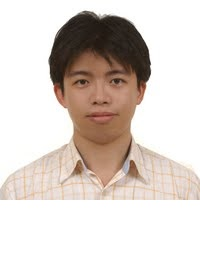

Tzu-Ming Liu, Senior Consultant

Dr. Liu is an expert in biomedical engineering with over 10 years experience in the field. He specializes in femtosecond laser technology, nano-phonetics, nonlinear optical microscopy, and pharmacokinetics of nanomedicines. As Wisdom's head of biomedial research, Dr. Liu reviews our project company's biotechnology research and advises on the commercialization of our client's products.
Earlier in his career, Dr. Liu was a post-doctoral researcher at National Taiwan University's Graduate Institute of Photonics and Optoelectronics. He also served as an assistant professor at the university's Institute of Biomedical Engineering. He has published papers in highly regarded publications such as the Biomedical Optics Express, Journal of Physical Chemistry, and Hydrobiologia among others. Dr. Liu is the owner of several nano-photonics patents.
Dr. Liu earned his bachelor of science in electrical engineering and Ph.D in electro-optical engineering at National Taiwan University.